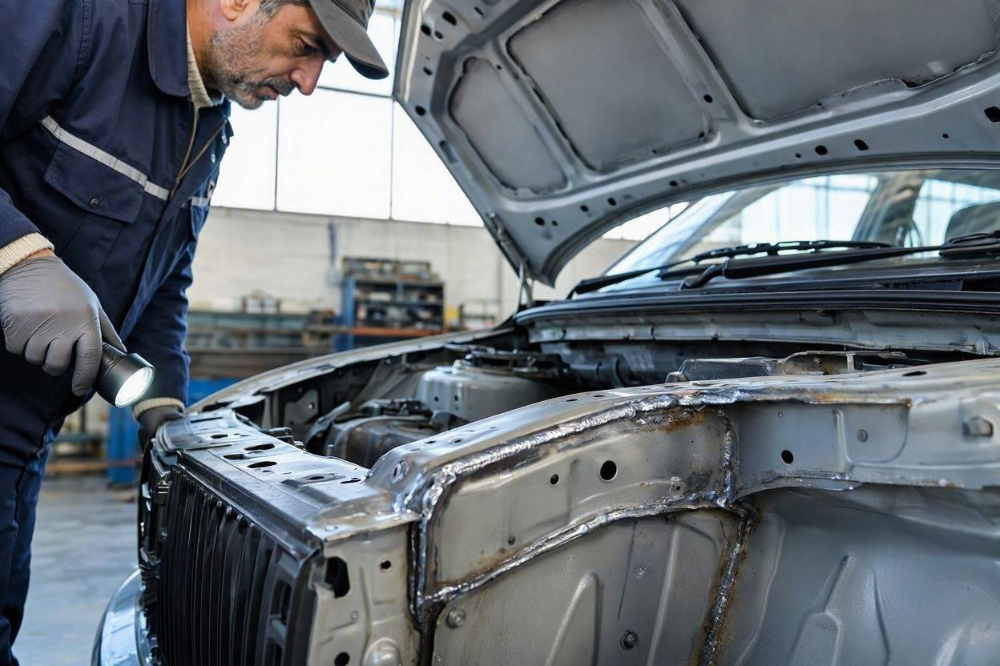
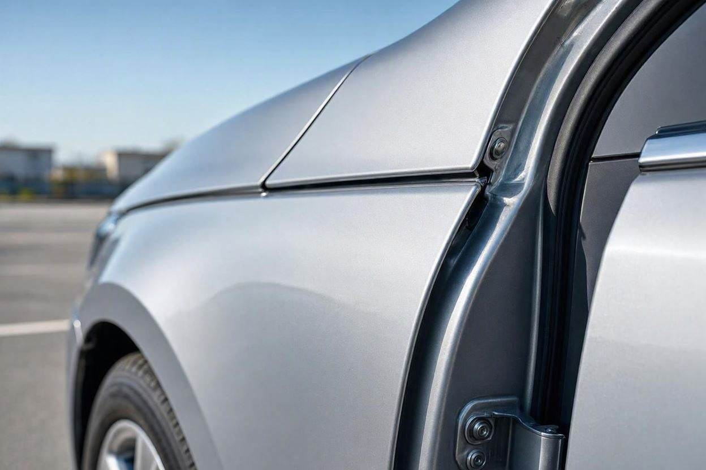

تشخیص شاسی ضربه خورده خودرو چگونه انجام میشود؟
فرض کنید برای دیدن یک خودروی دست دوم رفتهاید. بدنه تمیز است، رنگ هم یکدست به نظر میرسد و فروشنده میگوید خودرو هیچ مشکلی ندارد. اما شاسی، بخشی است که با یک نگاه ساده لو نمیرود. ضربهای که به سازه اصلی خودرو خورده باشد، میتواند پشت یک صافکاری تمیز پنهان بماند و بعد از معامله خودش را نشان بدهد.
تشخیص شاسی ضربه خورده با ترکیب چند نشانه انجام میشود، نه یک علامت تنها. تقارن بدنه و فاصله درها، رد جوش و برشکاری روی سرشاسی و طبق، چروک یا رنگشدگی کف صندوق و موتور، و رفتار خودرو هنگام حرکت مستقیم و ترمز را کنار هم بگذارید. بعضی ضربهها فقط با ابزار و تجربه کارشناس قابل تشخیص قطعی هستند.
خلاصه در یک دقیقه
- شاسی سازه اصلی و ایمنی خودرو است؛ ضربه به آن با رنگشدگی ساده فرق دارد.
- مهمترین نشانهها: بیتقارنی بدنه، فاصله نامنظم درها و کاپوت، رد جوش و برش روی سرشاسی.
- کف صندوق، سینی جلو و محل اتصال گلگیرها را برای چروک، موج و رنگ تازه بررسی کنید.
- خودرویی که در جاده صاف به یک سمت میکشد یا لاستیک نامنظم میساید، به بررسی جدیتر نیاز دارد.
- تشخیص قطعی سلامت شاسی معمولاً به ابزار و تجربه کارشناسی فنی نیاز دارد.
شاسی ضربه خورده یعنی چه؟
شاسی، اسکلت اصلی خودرو است؛ همان سازهای که بدنه، موتور و زیربندی روی آن سوار میشوند و در تصادف، انرژی ضربه را مهار میکند. وقتی میگوییم شاسی ضربه خورده، یعنی این سازه بر اثر تصادف تغییر شکل داده یا بریده و جوش داده شده است.
اینجا یک تفاوت مهم وجود دارد. رنگشدگی یا صافکاری روی گلگیر و درب، معمولاً یک مشکل ظاهری و قابل جبران است. اما آسیب شاسی روی فرمانپذیری، ایمنی در تصادف بعدی و ارزش واقعی خودرو اثر میگذارد. برای شناخت بهتر مرز میان این دو، مطالعه راهنمای ارزش خرید خودرو رنگشده کمک میکند.
نشانههای ظاهری شاسی ضربه خورده
بیشتر نشانههای اولیه شاسی، در نقاطی هستند که معمولاً دیده نمیشوند. بهترین زمان بررسی، نور مستقیم روز و پس از شستوشوی خودروست تا رد صافکاری و رنگ تازه پنهان نماند.

- بیتقارنی دو طرف بدنه هنگام نگاه از جلو و عقب خودرو
- فاصله نامنظم و ناهماهنگ میان درها، گلگیر، کاپوت و درب صندوق
- رد جوش تازه، برشکاری یا بتونه روی سرشاسی و طبقها
- چروک، موج یا رنگشدگی در کف صندوق و کف موتور
- پیچهای بازوبستهشده روی گلگیر، سینی جلو و رکاب
- ناهماهنگی رنگ و بافت در محل اتصال قطعات به بدنه
یکی از نقاط کلیدی، سینی جلو و محل نصب چراغهاست. اگر لبهها موج دارند یا رنگ آن با بقیه بدنه فرق میکند، احتمال ضربه جلو بالا میرود. رنگشدگی پنهان هم اغلب همراه این آسیبهاست؛ برای تشخیص دقیقتر آن میتوانید تشخیص رنگشدگی خودرو با گوشی موبایل را ببینید.
روش بررسی شاسی گام به گام
بررسی شاسی وقتی نتیجه میدهد که منظم و مرحلهبهمرحله انجام شود. این ترتیب کمک میکند نقطهای از قلم نیفتد.
- مرحله اول: از فاصله چند متری، تقارن کلی بدنه و ارتفاع دو طرف خودرو را نگاه کنید.
- مرحله دوم: فاصله و همراستایی درها، کاپوت و درب صندوق را با هم مقایسه کنید.
- مرحله سوم: درب صندوق را باز کنید و کف صندوق، محل زاپاس و لبهها را از نظر چروک و رنگ بررسی کنید.
- مرحله چهارم: کاپوت را باز کنید و سرشاسی، سینی جلو، طبقها و محل چراغها را برای جوش و برش نگاه کنید.
- مرحله پنجم: در صورت امکان خودرو را روی جک ببرید و کف و زیربندی را از پایین بررسی کنید.
در همه این مراحل، به جای دنبال یک علامت قطعی، چند نشانه را کنار هم بگذارید. یک درز کمی نامنظم بهتنهایی سند شاسیخوردگی نیست، اما وقتی با جوش تازه و چروک کف صندوق همراه شود، تصویر روشنتری میسازد.
پیش از معامله، خودرو را بررسی کنید
اگر درباره وضعیت شاسی یا بدنه خودرو مطمئن نیستید، بررسی تخصصی میتواند ابهامهای معامله را کمتر کند.
شروع کارشناسی خودروآنچه تست رانندگی درباره شاسی لو میدهد
بخشی از آسیبهای شاسی و زیربندی فقط در حرکت خودشان را نشان میدهند. برای همین تست رانندگی را سرسری نگیرید. مسیری با خیابان صاف، دستانداز و کمی سرعت انتخاب کنید.
- در جاده صاف و بدون فرمانگیری، خودرو باید مستقیم برود و به یک سمت نکشد.
- هنگام ترمز، خودرو نباید به یک طرف منحرف شود یا لرزش غیرعادی داشته باشد.
- سایش نامنظم لاستیکها میتواند نشانه بههمخوردن هندسه زیربندی باشد.
- صدای غیرعادی از زیربندی روی دستانداز را جدی بگیرید.
این نشانهها همیشه به معنی شاسیخوردگی نیستند و گاهی ریشه در تنظیم فرمان یا زیربندی دارند. برای همین نتیجه تست رانندگی را در کنار بررسی ظاهری تفسیر کنید، نه بهتنهایی.
تفاوت ضربه سطحی با آسیب سازهای
همه ضربهها یک اندازه مهم نیستند. جدول زیر کمک میکند بدانید با چه نوع آسیبی روبهرو هستید و چقدر باید نگران باشید.
| نوع آسیب | اثر روی ایمنی و ارزش | قابل تشخیص توسط خریدار؟ |
|---|---|---|
| خط و خش یا رنگشدگی سطحی | کم، بیشتر ظاهری | بله، در نور روز |
| صافکاری گلگیر و درب | متوسط، وابسته به کیفیت کار | تا حدی |
| ضربه سینی جلو و محل چراغ | متوسط تا بالا | تا حدی، با بررسی دقیق |
| جوش یا برش روی سرشاسی | بالا، مؤثر بر ایمنی | محدود، بهتر است کارشناس ببیند |
| تغییر شکل سازه اصلی | بسیار بالا | سخت، نیازمند ابزار کارشناسی |
هرچه آسیب به سازه اصلی نزدیکتر باشد، هم اثر آن بر ایمنی بیشتر است و هم تشخیصش سختتر. اگر معامله برای شما به قیمت هم گره خورده، خوب است پیش از توافق، نگاهی به قیمتگذاری خودرو بیندازید تا اثر این آسیبها را روی ارزش واقعی بسنجید.
اشتباهات رایج در بررسی شاسی
گاهی یک اشتباه ساده، همه بررسیهای قبلی را بیاثر میکند. این موارد را بشناسید تا در دامشان نیفتید.
- اعتماد کامل به ظاهر تمیز و رنگ یکدست بدنه.
- بررسی خودرو در شب یا زیر نور مصنوعی نمایشگاه.
- نادیدهگرفتن کف صندوق و زیر موتور به بهانه تمیزبودن ظاهر.
- تکیه به یک نشانه تنها به جای کنار هم گذاشتن چند علامت.
- پرداخت بیعانه پیش از بررسی فنی و بدنه.
چه زمانی سراغ کارشناس برویم؟
بررسی چشمی به شما دید خوبی میدهد، اما محدودیت دارد. تشخیص قطعی سلامت شاسی، عمق جوشکاری و میزان تغییر شکل سازه، اغلب با ابزار و تجربه تخصصی روشن میشود. تشخیص قطعی همیشه با چشم ممکن نیست.
کارماچک خدمات کارشناسی خودرو را برای بررسی فنی، رنگ، بدنه و عوامل مؤثر بر ارزش معامله ارائه میدهد. فقط ایراد خودرو را شناسایی نمیکنیم؛ اثر آن روی هزینه تعمیر و ارزش واقعی معامله را هم مشخص میکنیم. اگر روی خودرویی جدی شدهاید، میتوانید همانجا بررسی خودرو قبل از معامله را ثبت کنید یا جزئیات کارشناسی فنی و بدنه را ببینید.
یادتان باشد تصمیم نهایی مالی و فنی را نباید فقط بر پایه یک مقاله گرفت. این راهنما کمک میکند بهتر ببینید و بهتر بپرسید، اما در موارد حساس، نظر کارشناس یا تعمیرکار مورد اعتماد جای خودش را دارد.
جمعبندی
تشخیص شاسی ضربه خورده، کار یک نگاه ساده نیست. با کنار هم گذاشتن تقارن بدنه، فاصله درها، رد جوش و برش، وضعیت کف صندوق و موتور و رفتار خودرو در جاده، میتوانید تصویر واقعیتری به دست بیاورید. هر نشانهای که زودتر پیدا شود، هم از ریسک معامله کم میکند و هم دست شما را در چانهزنی بازتر میگذارد. برای بخشهایی که از چشم پنهان میمانند، کارشناسی فنی مطمئنترین راه است.
با خیال راحتتری معامله کنید
پیش از پرداخت پول، وضعیت شاسی و بدنه خودرو را روشن کنید تا با آگاهی بیشتری تصمیم بگیرید.
ثبت درخواست کارشناسیسؤالات متداول
آیا شاسی ضربه خورده را میتوان با چشم تشخیص داد؟
تا حدی. نشانههایی مثل بیتقارنی بدنه، فاصله نامنظم درها، رد جوش روی سرشاسی و چروک کف صندوق با دقت قابل دیدن هستند. اما تشخیص قطعی میزان آسیب سازه و کیفیت جوشکاری معمولاً به ابزار و تجربه کارشناسی نیاز دارد و از دید خریدار عادی پنهان میماند.
تفاوت شاسی ضربه خورده با خودرو رنگشده چیست؟
رنگشدگی معمولاً یک مشکل ظاهری روی قطعات بدنه است و اغلب قابل جبران است. اما آسیب شاسی به سازه اصلی و ایمنی خودرو مربوط میشود و روی فرمانپذیری و ارزش واقعی اثر میگذارد. هر خودرو رنگشدهای شاسیخورده نیست، اما آسیب جدی شاسی معمولاً با آثار رنگ و جوش همراه است.
کدام نقاط خودرو برای بررسی شاسی مهمتر هستند؟
سرشاسی و طبقهای زیر کاپوت، سینی جلو و محل نصب چراغها، کف صندوق و محل زاپاس، و محل اتصال گلگیرها و رکاب. در این نقاط دنبال جوش تازه، برشکاری، چروک، موج و رنگشدگی ناهماهنگ باشید. بررسی از زیر خودرو روی جک هم دید بهتری میدهد.
آیا خودرویی که به یک سمت میکشد حتماً شاسیخورده است؟
نه لزوماً. کشیدهشدن خودرو به یک سمت میتواند ریشه در تنظیم فرمان، باد لاستیک یا زیربندی داشته باشد. اما وقتی این نشانه با بیتقارنی بدنه و سایش نامنظم لاستیک همراه شود، احتمال آسیب سازهای جدیتر میشود و بهتر است با کارشناسی فنی بررسی شود.
آیا شاسی ضربه خورده قابل تعمیر است؟
بسته به شدت آسیب، بخشی از آسیبهای شاسی قابل مهار یا اصلاح است، اما تعمیر نمیتواند سازه را دقیقاً به حالت اولیه برگرداند و روی ایمنی و ارزش خودرو اثر میماند. تصمیم درباره خرید چنین خودرویی باید با آگاهی از میزان آسیب و اثر آن بر قیمت گرفته شود، ترجیحاً پس از کارشناسی.
آیا برای بررسی شاسی حتماً باید به کارشناس مراجعه کرد؟
برای غربال اولیه، خودتان میتوانید نشانههای ظاهری و رفتار خودرو در جاده را بررسی کنید. اما اگر روی خودرویی جدی شدید یا نشانههای مشکوکی دیدید، کارشناسی فنی مطمئنترین راه است، چون آسیب سازهای اغلب از دید غیرمتخصص پنهان میماند و اثر مالی بزرگی دارد.